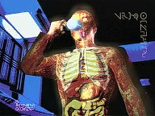
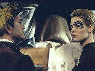
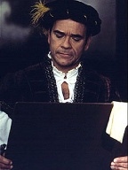
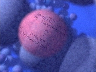
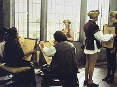

| MANCHETE
DO EPISDIO
Aliengenas
conduzem experimentos
cientficos letais na tripulao
Episódio
anterior | Prximo episódio Sinopse:
Data Estelar: 51244.3. Janeway
comea o dia com uma terrvel dor de cabea. O incmodo afeta a sua
curiosidade cientfica habitual: Chakotay acaba sem ter com quem dividir o
entusiasmo sobre pulsares binrios na regio. Nos tubos Jeffries, Tom e
B'Elanna se encontram secretamente. Embora a tenente sinta-se observada, temendo
ser pega em uma situao comprometedora, no tem ideia de que, também
secretamente, há alienígenas a bordo conduzindo experimentos cientficos na
tripulao.
 Quando Chakotay passa a envelhecer em ritmo extremamente
acelerado, o Doutor determina que certos segmentos de seu DNA foram
hiperestimulados. Neelix demonstra outros sintomas, que, por fim, também so
atribudos a alteraes no cdigo gentico. Em pouco tempo, vrios
tripulantes apresentam-se Enfermaria com os mais variados tipos de anomalias.
medida que a Voyager se v em uma crise, B'Elanna e o Doutor encontram
etiquetas microscpicas inseridas no DNA dos tripulantes. No meio da
investigao, entretanto, ambos so incapacitados.
Mais tarde, o médico acessa os implantes auditivos de
Seven of Nine e a chama para o Holodeck. Ele ajusta seus ndulos sensoriais
Borgs para que a ex-zangão possa sondar a nave procura de algo entranho.
Caminhando pelos decks, Seven v dezenas de alienígenas ocultados por algum
tipo de camuflagem, operando nos oficiais com instrumentos cirrgicos. Procura
a capitã para lhe informar da descoberta, mas descobre Janeway também cercada
de cientistas inimigos.
 Seven diz ao Doutor que os alienígenas estão realizando
experimentos mdicos na tripulao. Ela pretende torn-los visveis com um
feixe de phaser modulado, mas alertada pelo colega que os invasores podem
retaliar. Em vez disso, sugere que um choque neurolptico administrado em todos
os tripulantes anular os efeitos dos experimentos. Quando Seven tenta
implementar o plano, impedida por Tuvok, que desconhece suas intenes. Os
alienígenas percebem que ela pode v-los, o que a fora a expor um deles.
Janeway fica indignada ao descobrir que a missão dos "visitantes"
estudar os efeitos das manipulaes genticas para curar doenas fsicas e
psicolgicas entre a raa Srivani. E mais: v-se de mos atadas ao ser
ameaada caso tente impedir a continuidade das pesquisas.
Frente s vtimas - algumas fatais -, a capitã decide
que hora de conduzir um experimento próprio. Ela trava um curso direto para
os pulsares binrios, consciente de que aquilo provavelmente significar a
destruio da Voyager. Intimidados, os Srivani evacuam a nave rapidamente. A
tripulao consegue sobreviver jornada e o Doutor neutraliza os efeitos dos
experimentos.
Comentrios: "Scientific
Method" um episódio subestimado -- ao menos, na opinio deste
autor. Ele traz todos os elementos de uma boa história de fico-cientfica:
alienígenas ocultos conduzindo experimentos na tripulao, suspense, drama,
conflito humano. Traz também excelentes atuaes, trilha sonora, efeitos
visuais. Em termos de Voyager, tem mérito ainda por focar-se
exclusivamente nos personagens. O
segmento j comea bem ao desenvolver o relacionamento entre Tom e B'Elanna,
sinal de que os roteiristas no esqueceram do que fora sugerido na terceira
temporada e estabelecido em "Day of Honor"
e "Revultion". Neste quarto ano, a
produção parece preocupada em criar arcos paralelos. O telespectador agradece.  Convence,
também, porque todos os comportamentos -- dos "amassos" adolescentes
do casal ao pavio curto da capitã -- so explicados e se integram
perfeitamente. Exemplo disso quando Janeway repreende Tom e B'Elanna por suas
demonstraes pblicas de afeto. evidente que, como oficiais, eles
deveriam ter sido mais discretos. Evidente também que devessem sofrer
advertncia. Mas a capitã s o fez daquele jeito, rigorosa ao extremo, pois
estava irritada, cansada, sem dormir há quatro dias e sofrendo de uma constante
dor de cabea.
A tenso
aumenta quando a crise gentica se instala. H os que digam que
"brincar" com o DNA se tornou clich em Voyager. Em geral,
estão certos. Houve "Faces", "Threshold",
"Tuvix" e "Favorite
Son" -- alguns deles, exemplos do pior que a série pode fornecer.
Mas, aqui, a premissa funciona. Talvez, porque os roteiristas no entreguem de
bandeja a resoluo para a trama. sensacional a sequência em que o Doutor
e B'Elanna investigam o caso no laboratrio. Quando descobrem etiquetas
implantadas nas bases do DNA dos tripulantes, so ambos incapacitados.  Isso
remete a outro ponto positivo: o episódio sério, mas no perde o humor. E
as tiradas irnicas so muito bem colocadas. uma delcia assistir ao
dilogo entre Chakotay e Neelix na Enfermaria. Os dois estão na misria. A
soluo "rir para no chorar". Tuvok também rouba a cena quando
injustamente repreendido pela capitã e responde com uma ironia
"comportada". Ainda sobre Chakotay, preciso que se diga: Beltran
demonstra todo o seu potencial e versatilidade em "Scientific Method".
lamentvel que seu talento tenha sido desperdiado virtualmente ao longo de
todo o seriado.
Tambm
roubam a cena, como de costume, o Doutor e Seven. A qumica entre os atores
aparente e se fortalece a cada história. No difícil compreender por que,
a partir da quarta temporada, eles se tornam o sustentculo do seriado. Ryan
está tima. Adaptou-se muito bem ao ritmo de Jornada. A própria
Mulgrew no teve a mesma flexibilidade no incio.  Mas
no foi s de flores que se fez o segmento. imperdovel que os
alienígenas sejam fisicamente to parecidos com os humanos. Isso deprecia
bastante o roteiro. Da mesma forma, no d para entender por que esses
invasores no monitoraram as aes de Seven e seu contato com o Doutor.
Deixaram-nos agir livremente. Tambm fica sem explicao a deciso da capita
de jogar a Voyager contra os pulsares binrios. Por que ela simplesmente no
acionou o dispositivo de auto-destruio para intimidar os alienígenas? Ela o
fez em "Basics", quando a situao
era bem menos dramtica. Parece que os roteiristas quiseram precipitar uma
resoluo "anti-racional" que chocasse.
O
desfecho foi totalmente desapontador: cientificamente improvvel e de fácil
resoluo. A Voyager tem se provado um verdadeiro tanque de guerra ao longo
dos anos. No apenas sobrevive a batalhas contra as quais a Frota Estelar em
peso teria sido dizimada (ex: Borgs), como também atravessa inclume por
anomalias espaciais altamente destrutivas (ex: buraco negro em "Parallax").
Isso compromete toda a verossimilhana da série. Volta-se velha questo do
estado impecvel da nave toda semana. Mas isto tema para outro texto.
Citaes:
Seven - "I am unaccostumed to working
in a hierachy. In the Collective, there was no need to ask permission."
("No estou acostumada a trabalhar em uma hierarquia. Na Coletividade,
no havia a necessidade de pedir permissão.")
B'Elanna - "If you are going to be a member of this crew, get used to
it. Procedures exist for a reason. We've got to work together, follow the same
set of rules..."
("Se você quer ser membro desta tripulao, acostume-se Procedimentos
existem por uma razo. Temos que trabalhar juntos, seguir o mesmo conjunto de
regras...")
Seven - "Lieutenant?"
("Tenente?")
B'Elanna - "I was given that lecture once. By Captain Janeway, when I
first joined this crew. If I could adjust to Starfleet life, so can you."
("Eu ouvi esse sermo uma vez. Da capitã Janeway, assim que me juntei
tripulao. Se eu consegui me ajustar vida da Frota Estelar, você
também conseguir.") B'Elanna - "Do
you think he is going to say anything to the Captain?"
("Você acha que ele vai dizer alguma coisa capitã?")
Tom - "I
don't know."
("Eu no sei.")
B'Elanna - "Well, how did he sound? Annoyed? Amused?"
("Bom, como ele soou? Irritado? Entretido?")
Tom - "He
sounded Vulcan. What more can I tell you?"
("Ele soou
Vulcano. O que mais posso lhe dizer?") Neelix
- "Whatever happens, I try to keep in mind that things could be worse. I
still have my home here on Voyager, my friends."
("Acontea
o que acontecer, eu tento manter em mente quas coisas poderiam ser piores, Eu
ainda tenho meu lar aqui na Voyager, meus amigos.")
Chakotay - "Your
hair..."
("Seu cabelo...")
Neelix - "True. But I'd gladly lose it if I could have my tastebuds
back."
("Verdade. Mas eu o perderia com prazer se pudesse
ter meu paladar de volta.")
Chakotay - "At least you are not
losing your eyesight. See that display over there? Nothing but a blur."
("Pelo
menos você no perdeu sua viso. V aquele painel ali? s um borro.")
Neelix - "You think that's bad? The Doctor tells me my pupils have
dilated 60%. I can't even look at that display, it's so bright!"
("Você
acha que isso ruim? O Doutor me disse que minhas pupilas dilataram 60%.
No posso nem olhar para aquele painel, to brilhante!")
Chakotay - "Yeah?
Well, I've got chronic arthritis in my fingers. I can barely keep this glass
steady."
("? Bom, eu tenho artrite crnica em meus dedos.
Mal posso segurar este copo com firmeza.")
Neelix - "Well, that's nothing. My spinal column is fusing together.
In a few days, I won't be able to walk."
("Bom, isso no
nada. Minha coluna espinhal está se fundindo. Em alguns dias, no poderei
andar.")
Chakotay - "Got you beat. I can barely walk now."
("Ganhei
de novo. Eu mal posso andar agora.") Janeway
- "Who are you? And what te hell are you doing to my crew?"
("Quem
so vocês? E que diabos estão fazendo com minha tripulao?")
Trivia:
 Annette Helder, que interpreta a alienígena Takar (o nome revelado apenas
no roteiro e no deve ser confundido com o planeta Takar, de "False
Profits"), fez uma guarda no filme "Jornada nas Estrelas:
Primeiro Contato", de 1996. Tambm foi a tenente Nadia Larkin, em "The Siege of
AR-558", e Karina, em "Visionary" -- ambos episódios
de Deep Space Nine.
Annette Helder, que interpreta a alienígena Takar (o nome revelado apenas
no roteiro e no deve ser confundido com o planeta Takar, de "False
Profits"), fez uma guarda no filme "Jornada nas Estrelas:
Primeiro Contato", de 1996. Tambm foi a tenente Nadia Larkin, em "The Siege of
AR-558", e Karina, em "Visionary" -- ambos episódios
de Deep Space Nine.
O episódio no revela o nome da raa alienígena, mas o roteiro refere-se a
eles como os Srivani.
A USS Voyager tem 257 aposentos, de acordo com as especificaes ditas pelo
Doutor neste episódio.
Como chefe da segurana, Tuvok tem 30 departamentos que se reportam
diretamente a ele.
O tatarav de Neelix era da raa Mylean, que ocupou uma regio do espao
perto de Talax. Ficha
técnica: Direo de
David Livingston
Adaptao por Lisa Klink
Escrito por Sherry Klein e
Harry Doc Kloor
Exibido em 29/10/1997
Produção: 075 Elenco: Kate
Mulgrew como Kathryn Janeway
Robert Beltran como
Chakotay
Roxann Biggs-Dawson como B'Elanna Torres
Robert
Duncan McNeill como Tom Paris
Ethan Phillips como
Neelix
Robert Picardo como Doutor
Tim Russ
como Tuvok
Jeri Ryan como Seven of Nine
Garrett Wang como Harry Kim Elenco
convidado:
Rosemary Forsyth como Alzen
Annette Helde como Takar
Episódio
anterior | Prximo episódio
|